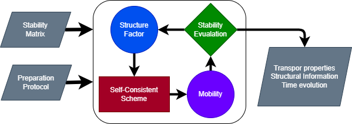

NESCGLE.jl
Documentation for NESCGLE.jl
Main process

Solver
NESCGLE.NESCGLEsolver — FunctionNESCGLEsolver(sm::StabilityMatrix, pp::PreparationProtocol; kwds...)Main function of the NESCGLE system. The two main inputs of this function are the stability matrix and the preparation trotocol.
Arguments
sm::StabilityMatrixStability matrix of the problempp::PreparationProtocolpreparation protocol
Optional Arguments
so=saving_options()Saving optionstw = waiting_times()Intermediate waiting times gridpath = ""save path
Example of usage for a static process
Nk = 200
kmax = 15*π; dk = kmax/Nk
k = dk*(collect(1:Nk) .- 0.5)
ϕ = 0.5
sm = SM_HS(ϕ, k)
pp = StaticProcess(sm.params)
NESCGLEsolver(sm, pp, so = saving_options(true, true, false))Example of usage for a Instantaneous Process
Nk = 200
kmax = 15*π; dk = kmax/Nk
k = dk*(collect(1:Nk) .- 0.5)
ϕi = 0.5
ϕf = 0.6
sm = SM_HS(ϕi, k)
pp = StaticProcess([ϕi, 1.0], [ϕf, 1.0])
NESCGLEsolver(sm, pp, so = )Sponsors